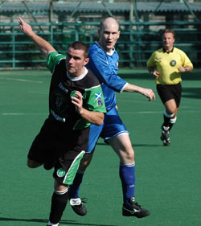
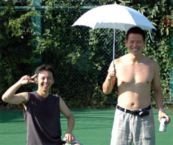
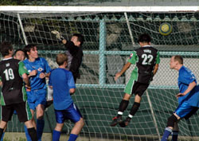

|
St Mary's, Sat 2nd Sept. What a great way to start the new season! A beautiful dry sunny day, blue skies, 26 degrees and a football game in Tokyo! The Jets had not lost a TML game for over 12 months, and had high confidence after a 3-1 win over Sala in their debut game in the first division. They were looking to mark their arrival with style than a victory over the title defending Hibs. The Hibs had worked hard over summer to keep our fitness and match sharpness.
From the kick off, Tomo tucked in the ball behind the last defender, who put it out for a throw in. Pressure on the defense caused an errant back pass that Yasu pounced on to beat the keeper. After scoring a goal inside a minute v Sala, the Jets now had to respond to a similar challenge.
After 5 minutes Kuni K swung in a well weighted free kick behind the Jets off side trap that Tomo placed a glancing header beyond the Jets keeper. The Hibs were holding possession for long periods, and were camped in the Jets half for long periods. Jay headed in a scrappy goal with the last play before the half time break. 3-0 into half time.

The Jets came out much stronger and assertive in the second half and began to show the physical side of their game; putting pressure on the Hibs, causing the Hibs to spill possession much sooner than they had in the first half. This changed the game somewhat as the Jets began to hold possession and have more attacking raids. One of these raids led to a corner that resulted in a penalty. One of the Jets attackers seemed to have been taking advantage of the absence of a TML drug testing program; as while the corner was being set up; he was running around randomly screaming in defenders faces, “who have you got, I’ve got 12, you’re on 6; I’ve got 2 men here etc, etc.” This was too much for Jay who decided to give him a shove to bring him to his senses as the corner came in. Unfortunately for Jay and the Hibs it was eagle-eyed Ricky the Ref holding the pea and he saw everything and awarded the clear penalty. The PK was finished expertly by Nate, leaving Hitoshi no chance. 3-1 and this time the entire Jets team had a sniff….. of getting a result.
Some sharp work from Yohei on the left led to the Hibs 4th. He beat his man and played in Tomo, who swept it near post for Yama. His first attempt didn’t leave his boot but his second made it into the roof of the net. The Jets then made it 4-2, finishing from a tight angle; after some good work from the sharp left midfield No. 4 and some less than adequate Hibs defending.
Tomo made the score line more flattering with a cross/shot that floated in from 35 yards.
Overall this was a very pleasing performance from the Hibs. The attacking potency of Mick, Yama, Keita, Tomo, Yohei, Kuni and Yasu mean that any team that holds the Hibs to a clean sheet will have played to a top level.
On to the Swiss next week. A repeat of last year’s result in the same game would do me.
Report – Bevan Colless
|